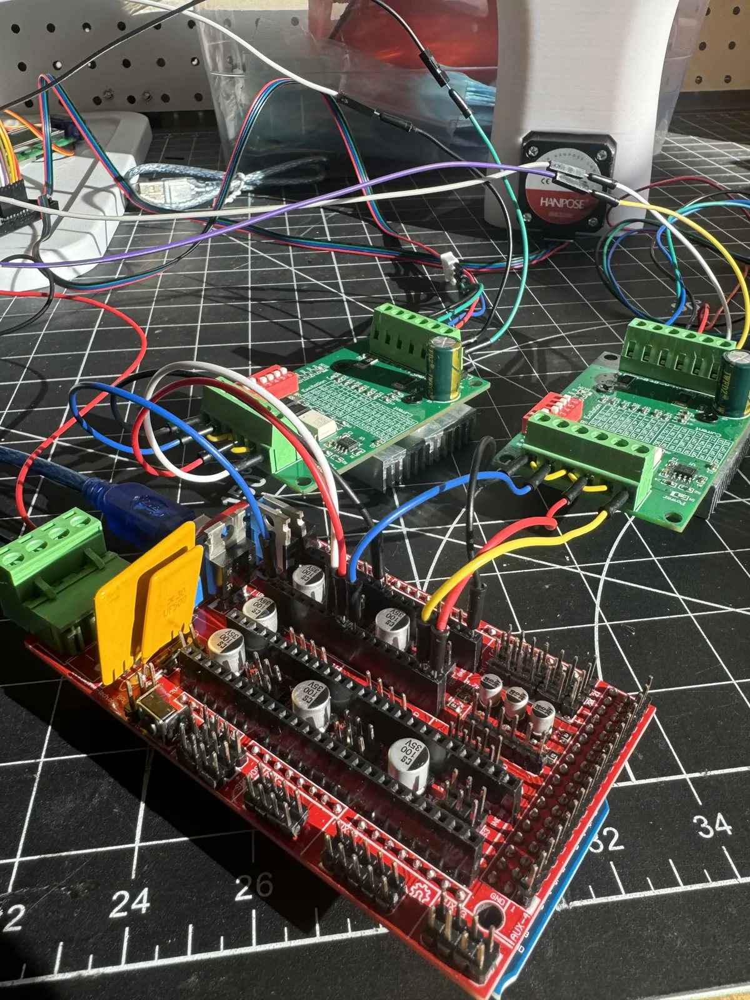
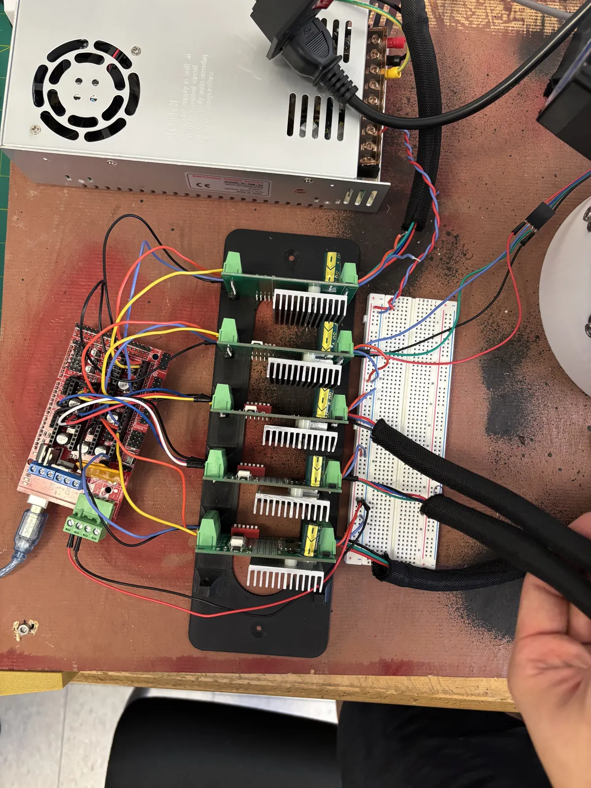
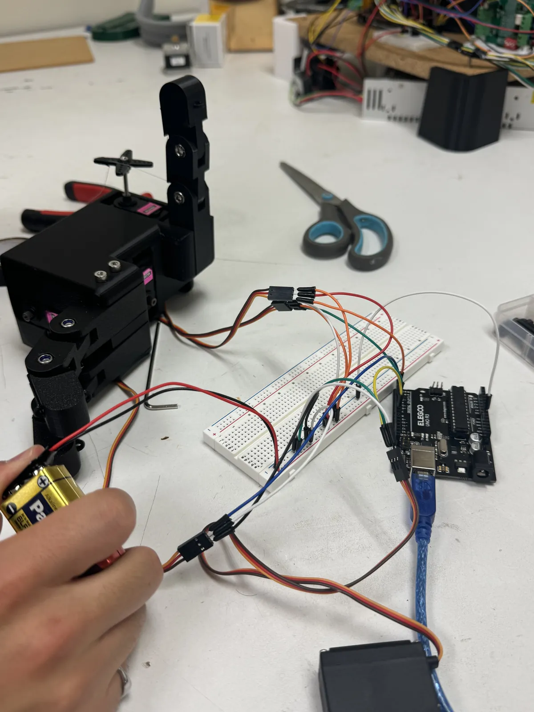
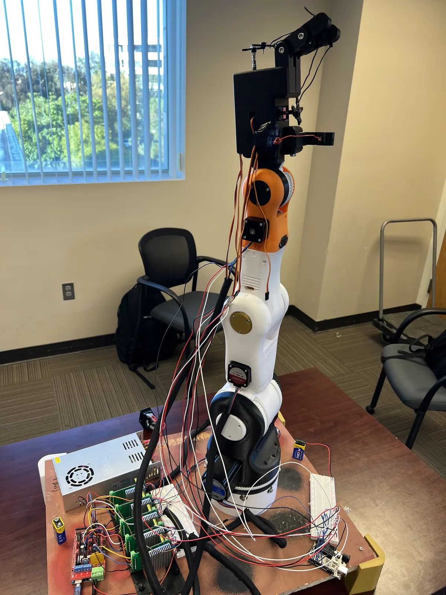

02
4-DOF Robotic Arm
Team project · Electrical Engineer
- Role
- Electrical Engineer
- Timeline
- Jan 2025 – May 2025
- Team
- 6 members, 3 subteams
- Stack
-
- Arduino
- Stepper motors
- Servo motors
- RAMPS shield
- 3D printing
This 4-DOF robotic arm was developed over several months by a six-member interdisciplinary team across design, mechanical, and electrical subteams, incorporating custom 3D-printed components and independently wired electronics. As an Electrical Engineer, I was responsible for programming the arm’s movement and integrating circuitry between electronic components and power systems. The custom designed hand uses servo motors, while the arm uses stepper motors, with all movement programmed in Arduino IDE.
Electrical integration


System testing & final assembly

